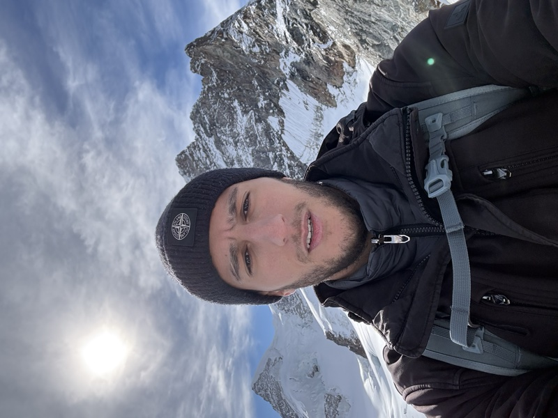

01
About

I'm a data scientist at IBM Consulting, where I build machine learning and AI systems for clients, with a focus on large language models and how to adapt them to real-world tasks through post-training.
My research background is in AI for medical imaging, particularly lung ventilation/perfusion (V/Q) scintigraphy for pulmonary embolism. I developed deep learning methods for enhancing low-count images, detecting and segmenting perfusion defects, and building large annotated datasets, work that has led to several journal papers and a patent application.
Outside of client work, I study mechanistic interpretability: trying to understand how language models represent information and compute their answers, and using that understanding to make models more reliable and easier to steer.
I'm interested in the gap between what models appear to do and what they actually do internally, and in turning research ideas into tools that work in practice.
02
Experience
- Data Scientist, IBM Consulting
- Research Assistant, Ottawa Hospital Research Institute
- Machine Learning Engineer Intern, IBM
- Software Developer, Immigration, Refugees and Citizenship Canada
03
Education
- 2021–2023MSc, Computer Science, University of Ottawa.
Thesis: Artificial Count Enhancement of Lung Scintigraphic Images Using Deep Learning Techniques. - 2015–2020BSc, Computer Science / Life Sciences (Dual Degree), University of Ottawa.
04
Projects
05
Publications
- 2026Artificial count enhancement in lung scintigraphy for acquisition acceleration and pseudo-planar generation. A Jabbarpour, S Ghassel, S Kaviani, J Lang, E Moulton, R Klein. Physics in Medicine & Biology 71(17), 175037.
- 2026Artificial intelligence-enabled detection of vascular perfusion defects on ventilation/perfusion (V/Q) scintigraphy for pulmonary embolism. A Jabbarpour, E Moulton, S Kaviani, S Ghassel, W Zeng, R Akbarian, et al. Physics in Medicine and Biology.
- 2025On the construction of a large-scale database of AI-assisted annotating lung ventilation-perfusion scintigraphy for pulmonary embolism (VQ4PEDB). A Jabbarpour, E Moulton, S Kaviani, S Ghassel, W Zeng, R Akbarian, et al. Frontiers in Nuclear Medicine 5, 1632112.
- 2025The effect of resizing on the natural appearance of scintigraphic images: an image similarity analysis. S Ghassel, A Jabbarpour, J Lang, E Moulton, R Klein. Frontiers in Nuclear Medicine 4, 1505377.
Paper and patent application (US 18/892,028) - 2023The past, present, and future role of artificial intelligence in ventilation/perfusion scintigraphy: a systematic review. A Jabbarpour, S Ghassel, J Lang, E Leung, G Le Gal, R Klein, E Moulton. Seminars in Nuclear Medicine 53(6), 752–765.
06
Contact
The best way to reach me is by email: siraj.ghassel@gmail.com.